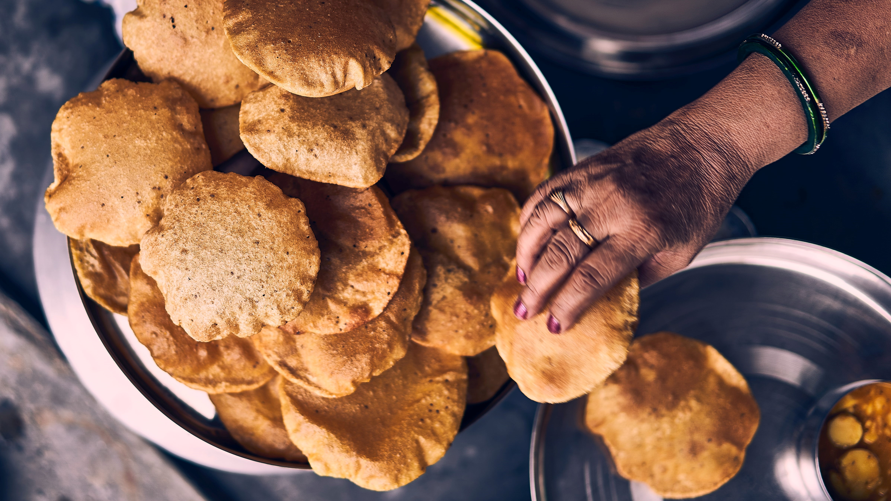

The Philippines is highly diverse in terms of cuisine appreciation, particularly when it comes to specialties. It is customary for Filipinos to acquire their popular products whenever they visit a particular location. It appears that many sweet delicacies have served as a source of pride throughout the Philippines, one of which is the Laguna Province.
Ingredients for BIBINGKA:
- 1 tablespoon baking powder
- 6 pieces banana leaves, round shape; about 9 inches in diameter
- ½ cup butter
- 1 ½ cup coconut milk
- 3 eggs
- ½ cup sticky rice flour
- 3 tablespoons oyster sauce
- 2 cups rice flour
- 1 piece salted egg, cut into wedges
- 1 cup sugar
Ingredients for BIBINGKA TOPPINGS:
- 1 tablespoon butter
- 1 tablespoon cheese, cheddar cheese or Edam cheese
- 1 tablespoon grated coconut
- 1 tablespoon sugar
Preparation:
- Heat wok or pan. Sear pork fat until enough oil is extracted. Saute onion and garlic until the onion softens. Add pork, chicken, and liver. Saute until the outer parts turn light brown. Add soy sauce, oyster sauce, and water. Cover the wok. Let the liquid boil. Add crushed red pepper and brown sugar. Stir. Continue boiling for 5 minutes. Add fresh noodles. Toss. Put the carrot and cabbage into the wok. Continue tossing until all ingredients are well blended. Cover and cook for 2 minutes. Season with ground black pepper and pour cornstarch slurry (2 teaspoons of cornstarch + 2 teaspoons of soy sauce + ¼ cup water). Toss.Add boiled quail eggs. Transfer to a serving plate. Serve! Share and enjoy!
Ingredients for ROYAL BIBINGKA:
- 1½ cup glutinous rice flour
- 6 tablespoons sweet rice flour Mochico
- 2 cups coconut milk
- 1 cup sugar
- 1/3 cup evaporated milk
- ½ cup margarine softened
- 3/4 cup shredded cheddar cheese
- 4 egg yolks
- 1 egg
Preparation:
- Preheat oven to 350F. Combine the glutinous rice flour, sweet rice flour, and sugar in a bowl. Whisk until well blended. Set aside. In a clean bowl, beat the eggs, pour the evaporated milk and coconut milk and then continue to beat until all the ingredients are well incorporated. Gradually add the rice flour mixture to the bowl with wet ingredients and continue to whisk until the texture becomes soft. Brush margarine into the aluminum molds and then pour the mixture equally between all molds. Temporarily cover the molds with foil. Bake for 18 minutes. Remove the cover. Brush with more margarine and sprinkle cheese on top. Put back in the oven and continue to bake in 350F for 22 minutes. Set the oven to broil and broil for 8 minutes.
Ingredients for ROYAL BIBINGKA:
- Banana leaves enough to line your molds
- 28.35 g (2 tbsp) unsalted butter melted
- 64 g (13 tbsp) white granulated sugar
- 184 g (6 fl oz) coconut milk
- 60 g (2 fl oz) whole milk
- 170 g (1 ½ c) rice flour
- 5 g (1 tsp) baking powder
- 1 g (¼ tsp) salt
- 1 egg
TOPPINGS:
- 1 salted duck egg sliced into quarters
- Unsweetened coconut shreds
- Cheddar cheese or Velveeta shredded
EQUIPMENT USED:
- 11-inch whisk – OXO
- glass bowl – Anchor Hocking
- flour sifter
- 4 (5-7 inch diameter) brioche molds – Gobel
Preparation:
- Preheat the oven to 400 °F. Carefully clean the banana leaves under running water, making sure not to rip them. If your banana leaves are tough, carefully warm them over a warm stove making sure not to have the fire or electric burners touch the banana leaves (or they will burn). Once the leaves are soft and moldable, line the molds with banana leaves. You can use scissors to cut off the excess banana leaves around the edge. In a large mixing bowl, cream together the melted butter and sugar until combined. Pour the coconut milk and whole milk and whisk until combined. Sift the rice flour, baking powder, and salt into the wet ingredients. Whisk together the ingredients until there are no more lumps. Pour the batter into the molds about 80% of the way up. Put the molds on a sheet pan to help stabilize the bibingka. Put the molds and sheet pan into the oven. After 9 minutes, add the salted egg topping to the bibingka and continue to bake for another 10 minutes. **NOTE: for coconut shreds, wait until 11 minutes to prevent burning the coconut. For cheese topping, wait until 19 minutes before adding to prevent burning the cheese. After 19 total minutes bake time, rotate the bibingka molds 180° to promote even baking since the back of the oven is usually hotter. Cook for an additional 5 minutes. Test the bibingka by pushing a cake tester or toothpicks into the middle of the bibingka. If it comes out clean, the bibingka should be done. If it’s wet, continue to cook for an additional 2 minutes and then check again. The bibingka should be firm in the middle and slightly golden on the top, but not burned.
Ingredients:
- C4 pieces eggs
- 1 pack MAYA Original Fluffy n’ Tasty Hotcake Mix 200 grams
- 1/4 cup sugar
- 1 tablespoon rice flour
- ¼ cup fresh milk
- ¼ cup coconut cream store bought
- ¼ cup coconut milk store bought
- 1/4 cup butter melted
- Different flavorings and toppings as desired ube flavoring, buko pandan flavoring, instant coffee powder, leche flan, chocolate ganache, etc.
- salted egg sliced
- cheese sliced or grated
- banana leaves for lining of pans (optional)
- grated coconut optional
Preparation:
1. Preheat oven to 350⁰F/177⁰C. Line mamon molder or 6-holes 8oz muffin pans with banana leaves. Set aside.
2. In a bowl beat eggs, then add hotcake mix, rice flour, sugar, milk, coconut milk, coconut cream, and melted butter. Mix well. Fold in desired flavors.
3. Fill up to ¾ of the mamon molder or muffin pans with the bibingka mixture. Bake bibingka for 10 to 15 minutes or until toothpick inserted in the middle comes out clean.
4. Note: In the middle of baking, around 5 to 6 minutes of baking, gently take the half baked bibingka and top it up with sliced salted egg and sliced or grated cheese. Then put it back in the oven to completely bake the bibingka.
5. Serve with butter on top and grated coconut on side.
Ingredients:
- 3 cups glutinous rice flour toasted
- 1/2 cup sweet rice flour toasted
- 2 cups sugar
- 3 cups coconut milk
- 1 1/2 cups grated coconut toasted
- 1 tsp vanilla essence
Preparation:
1. In a cooking pot, pour-in the coconut milk and bring to a boil.
2. Add the sugar and stir continuously for 10 minutes.
3. Put-in the toasted grated coconut and cook for 5 minutes.
4. Add the vanilla essence and toasted rice flour and cook for 40 minutes to 1 hour or until the mixture becomes really thick while folding.
5. Remove the mixture from the pot and allow to cool down.
6. Dust the toasted sweet rice flour in a flat surface.
7. Divide the mixture into parts and roll over the dusted sweet rice flour until a cylindrical shape is formed.
8. Slice according to your preference.
9. Put in a serving plate or wrap in paper or banana leaf. Share and enjoy!
Ingredients UBE FLAVOR:
- 2 cups coconut cream
- 1 ¾ cups evaporated milk
- ⅓ cup sugar
- 2 cups ube jam / halaya
- 1 tbsp ube flavoring
Ingredients PANDA FLAVOR:
- 2 cups coconut cream
- 1 ¾ cups evaporated milk
- ⅓ cup sugar
- 1 bundle pandan leaves
- 2 tbsp green food coloring
Preparation UBE FLAVOR:
1. Combine coconut cream, evaporated milk, sugar, and ube in a large non-stick pot and bring to a boil. Simmer for 10 minutes. Continue to stir until sugar and ube have completely dissolved and everything is smooth and well combined.
2. Mix in ube flavoring and toasted glutinous rice flour. Continuously stir until a dry paste that holds its shape forms. Remove from heat. Cool until slightly tacky.
Preparation PANDA FLAVOR:
1. Combine coconut cream, evaporated milk, sugar, and pandan leaves in a large non-stick pot and bring to a boil. Simmer for 10 minutes. Continue to stir until sugar has completely dissolved and everything is smooth and well combined.
2. Mix in green food coloring and toasted glutinous rice flour. Continuously stir until a dry paste that holds its shape forms. Remove from heat. Cool until slightly tacky.
ASSEMBLY:
1. Dust surface with remaining toasted glutinous rice flour. Spread and flatten out both flavors to about ½ - inch thickness. Lightly dust the tops with more toasted glutinous rice flour.
2. Slice ¼ - inch thick strips across each flavor.
3. Place alternating strips and twist with a bit of pressure until a tight, two-toned rope is formed. Roll in more toasted glutinous rice flour.
4. Cut into 3-4 - inch pieces.
Preparation:
1. In a large non-stick pan / wok over medium heat, toast the glutinous rice flour, stirring constantly until everything is an even light brown color.
2. Set aside 1 cup of the toasted glutinous rice flour and divide the remaining in half.
Ingredients ESPASOL SOFT AND CHEWY:
- 4 1/2 cups glutinous rice flour
- 4 cups coconut milk
- 2 cups sugar
- 1 teaspoon vanilla extract
- 1 teaspoon salt
Preparation:
1. In a skillet over medium heat, toast rice flour, stirring frequently, for about 15 to 20 minutes or until color changes to pale gold and aroma becomes nutty. Set aside 1 cup for coating the espasol.
2. In a wide pan over medium heat, combine coconut milk, sugar, vanilla extract, and salt. Bring to a boil until sugar and salt are dissolved.
3. Slowly add 3 1/2 cups of the toasted rice flour, whisking vigorously to prevent lumps. Lower heat and continue to cook, stirring and turning regularly, for about 30 to 40 minutes or until mixture is very sticky and becomes oily.
4. Dust the bottom of a rectangular baking dish with 1/2 cup of the reserved toasted flour. Transfer mixture into the pan.
5. With a lightly-greased knife or spatula, spread and flatten the mixture evenly. Sprinkle with the remaining reserved toasted flour.
6. Cut the espasol into desired lengths and then roll on toasted flour to fully coat. Shake to rid of excess flour and wrap each piece in Japanese paper or banana leaves.
Ingredients MACAPUNO ESPASOL:
- 2 ½ cups glutinous rice flour
- 1 14-oz. can coconut cream
- 1/4 cup sugar or less (depending on your taste preference)
- 1 cup macapuno
- 1 tsp vanilla extract
- ½ tsp salt
Preparation:
1. In a pan, toast the glutinous rice flour over medium heat for about 25 minutes or until light brown. Set aside.
2. In a saucepan over medium heat, mix coconut cream and sugar. Stir until sugar is dissolved.
3. Add the macapuno, salt, and vanilla extract and bring to a gentle boil.
4. Gradually add 2 cups toasted glutinous rice flour while stirring. Cook over low heat, stirring constantly, for 30 minutes or until you get a soft dough-like consistency.
5. Remove from heat and let cool for a while.
6. You can divide it into balls and roll each ball into a mini log and dredged it in the remaining toasted flour.
Ingredients BUKO PIE:
- 2 cups all-purpose flour
- 1/3 cup butter
- 1 teaspoon salt
- 1/3 cup vegetable shortening
- 6 to 8 tablespoons cold water
- 2 cups young coconut meat
- 3/4 cup granulated white sugar
- 1/2 cup cornstarch diluted in 1/2 cup young coconut water
- 1/2 cup evaporated milk
Preparation:
1. Create the crust. Combine flour and salt then mix using a balloon whisk. Add butter and shortening then mix using a pastry mixer. Gradually add cold water a tablespoon at a time while mixing the ingredients. When everything is completely mixed, gather the mixture and divide into two equal parts. In a flat surface flatten each of the dough and roll using a rolling pin until wide enough to fit an eight or nine inch cake pan. Note: Sprinkle flour over the flat surface to prevent the dough from sticking or use a silicon mat. Arrange the first dough over the cake pan. This will be the base. Set the second flattened dough aside. This will be needed after arranging the filling in the cake pan.
2. Make the filling by heating a saucepan and pour-in the milk. Let boil.
3. Add the granulated white sugar and stir.
4. Put-in the young coconut meat and cook for 3 minutes.
5. Pour-in the cornstarch diluted in young coconut water and stir thoroughly while cooking. Cook until the texture thickens.
6. Turn-off the heat and allow the mixture to cool down.
7. Preheat oven to 375 degrees Fahrenheit.
8. Arrange the cooked filling in the cake pan.
9. Put the second crust over the filling and seal the sides.
10. Create holes on the secondary crust using a fork. This will serve as exhaust vents that will prevent the crust from deforming.
11. Bake for 45 to 55 minutes or until the color turns golden brown. Note: Baking time may vary; make sure to check the color of the crust to determine if baking is complete.
12. Let cool and serve. Share and enjoy!
Ingredients APPLE PIE:
- 2 Pastry doughs
- 1/2 cup butter divided
- 3 tablespoons flour
- 1/2 cup granulated white sugar
- 1/2 cup brown sugar
- 6 to 8 pieces baking apples granny smith's; peeled, cored, and sliced
- 1/2 teaspoon ground cinnamon
- 1/8 teaspoon nutmeg
Preparation:
1. Preheat oven to 425 degrees Fahrenheit.
2. In a mixing bowl, combine apples, sugars, flour, nutmeg, and cinnamon then mix well.
3. Set 1 pastry dough on a round cake or pie pan then put-in the apple mixture and arrange.
4. Distribute butter on top of the apple mixture.
5. Cover with the second pie crust then seal the edges.
6. Bake for 15 minutes then reduce heat to 300 degrees Fahrenheit and bake for another 40 to 45 minutes.
7. Remove from the oven and serve.
8. Share and enjoy!
Ingredients ICE CREAM PIE:
- half gallon (2 quarts) favorite ice cream or sorbet
- 1 (9 inch) pre-made cookie or graham cracker crust
- Favorite toppings (chocolate chips, chocolate syrup (or Magic Shell), sprinkles, chopped fruit, candy bars, etc.)
Preparation:
1. Let ice cream thaw until slightly soft and scoop-able. Then gently spread a layer in the pie crust, approximately 1″ thick. Add in a light layer of toppings on top.
2. Then add one more 1″ thick layer of ice cream, and add more toppings on top. Freeze the pie until it is firm again, then slice and serve. (Top with whipped cream if you’d like.)
NOTES:
Ingredient Combination Ideas:
4. Mint chocolate-chip ice cream, Oreo crust, chocolate chips, chocolate syrup, chocolate bar shavings
5. Coffee ice cream, Oreo crust, chocolate syrup, chocolate-covered espresso beans
6. Strawberry (or any fruit) ice cream, graham-cracker crust, chopped strawberries and bananas (or other fresh fruits)
7. Toffee ice cream, graham-cracker crust, crushed Heath Bar bits, caramel topping, chocolate syrup
8. Peach or vanilla ice cream, graham-cracker crust, caramel sauce, diced peaches (all the better if caramelized!)
Ingredients CHIFFON PIE:
- 1 (.25 ounce) package unflavored gelatin
- ¼ cup cold water
- 4 egg yolks
- 4 egg whites
- 1 cup white sugar
- ½ cup fresh lemon juice
- 1 teaspoon lemon zest
- ½ teaspoon salt
- 1 (9 inch) prepared graham cracker crust
Preparation:
1. Soften gelatin in water 5 minutes.
2. Beat yolks and add 1/2 cup of the sugar, lemon juice and salt. Cook in the top of a double boiler, stirring constantly, until of custard consistency. Add grated lemon zest and softened gelatin and stir thoroughly. Cool.
3. When mixture begins to get thick, In a clean bowl, whip egg whites until stiff, adding remaining 1/2 cup sugar while whipping. Fold egg whites into custard.
4. Pour filling into pie shell and chill in refrigerator. Serve when firm. Garnish with sweetened whipped cream if desired.